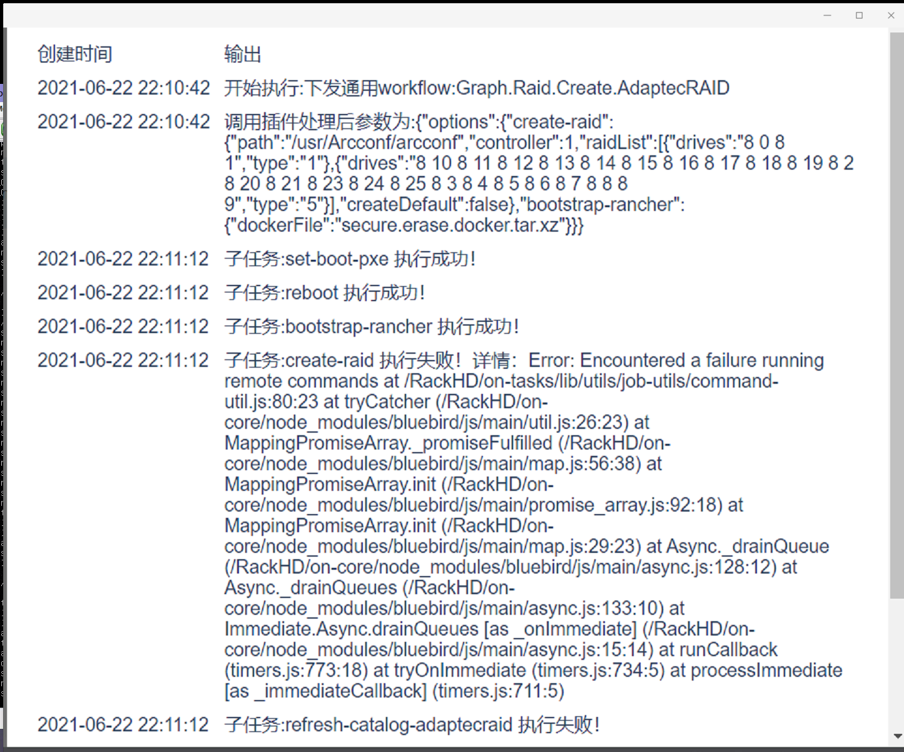
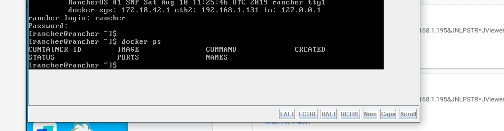
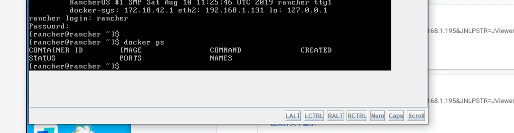

故障排除¶
Q：rackshift 主服务无法启动，8082 端口无法访问¶
 这个故障一般是 mysql 容器与 rackshift 服务主容器第一次安装启动的联动问题。
执行如下命令
这个故障一般是 mysql 容器与 rackshift 服务主容器第一次安装启动的联动问题。
执行如下命令
- rm -rf /opt/rackshift/data/mysql
- rsctl reload 如果 reload 还是不启动可以再多次 rsctl reload
如果还是没有正常启动并且报了如下错误
 必须手动创建 mysql 数据库了，依次执行如下命令
必须手动创建 mysql 数据库了，依次执行如下命令
- docker cp /opt/rackshift/conf/mysql/sql/rackshift.sql rackshift_mysql_1:/
- docker exec -it rackshift_mysql_1 sh
- mysql -uroot -padmin
- create database rackshift;
- use rackshift;
- source /rackshift.sql
- rsctl reload (再重启服务)
Q：通过 rsctl status 发现有的服务无法启动¶
 如图 rackshift_dhcp_1 服务器使用的是开源的 isc-dhcp-server，该服务器规定了必须至少绑定一块网卡才可以正常启动，这里我们一般都是绑定提供 PXE 功能的
网卡的地址段，比如192.168.2.0/24
如图 rackshift_dhcp_1 服务器使用的是开源的 isc-dhcp-server，该服务器规定了必须至少绑定一块网卡才可以正常启动，这里我们一般都是绑定提供 PXE 功能的
网卡的地址段，比如192.168.2.0/24
 回到 RackShift 界面在网络页面，配置好正确的 DHCP 地址段，点击确定，dhcp 服务将会自动重启,故障解决。
回到 RackShift 界面在网络页面，配置好正确的 DHCP 地址段，点击确定，dhcp 服务将会自动重启,故障解决。
Q：PXE 网段发生变化，怎么重置 RackShift IP¶
使用 rsctl reconfig 命令重置即可
Q：服务器无响应？¶
使用 rsctl restart 命令尝试重启。如果不能成功请确认 RackShift 服务正确的运行的 PXE 网卡之上，并且尝试 rsctl reconfig 重设为正确的 IP 地址
Q：制作 RAID 报错¶
 检查磁盘是否做过raid，如果有必须先执行清空 raid 操作才能执行制作 raid
Q：无法引导 PXE¶
 把引导模式切换成 bios/legacy 吧
如果还是不行尝试安装下面顺序重启服务，记住 firewalld 不能关闭
systemctl restart network
systemctl restart docker
systemctl restart firewalld
rsctl reload
把引导模式切换成 bios/legacy 吧
如果还是不行尝试安装下面顺序重启服务，记住 firewalld 不能关闭
systemctl restart network
systemctl restart docker
systemctl restart firewalld
rsctl reload
Q：一直处在发现中 无法搜集信息¶
 登录账号密码： rancher / monorail 发现没有任何运行的 docker 容器（搜集硬件信息 agent）

下载rancher1.2内核文件,依次执行
登录账号密码： rancher / monorail 发现没有任何运行的 docker 容器（搜集硬件信息 agent）

下载rancher1.2内核文件,依次执行
- tar zxvf rancher1.2.tar.gz
- cd rancher && sh rancher.sh
- 再 PXE 重启服务器即可